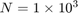
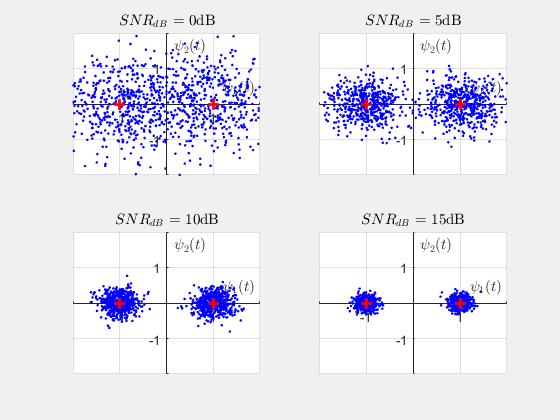
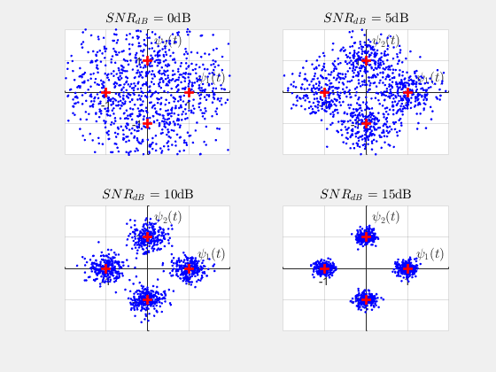
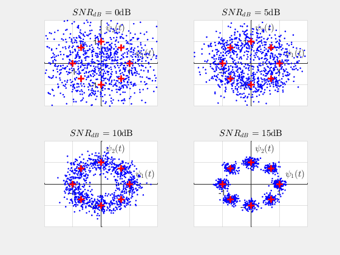
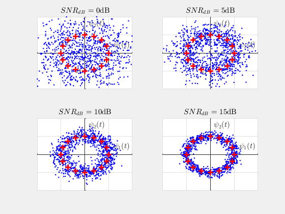
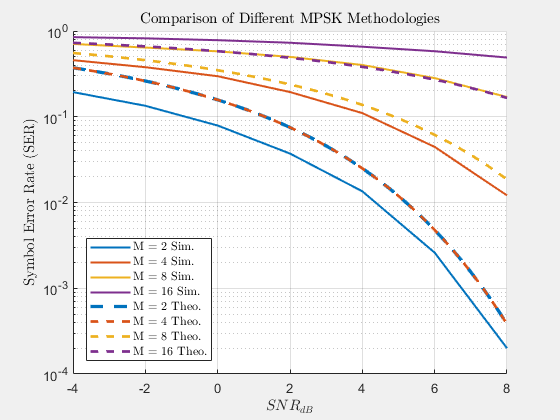

Contents
David Dobbie : 300340161
ECEN 310 / ENGR 440 Communications Engineering Lab 1 - Bit Error Rate
clear all; close all; clc;
Q1:
set(0, 'defaulttextInterpreter','latex') N = 1e3; s = zeros(N,1); n = zeros(N,1); r = zeros(N,1); sest = zeros(N,1); Es = 1; rng(6) % sets generator seed SNRdB_axis = 0:5:15; % init MPSK
1b, 1c
Here there are several plotted constellations for BPSK, QPSK, 8PSK, and 16PSK respectively. We see that as there are more points on the constellation, there is less distance between each symbol. This introduces a potential for symbol error.
We see that the higher the SNR, the more closely packed the received symbols are to their target decision points. As SNR is reduced, the distribution becomes wider and causes more potential for potential conflict iwht other decision points.
Constellation plots contain  data points.
M_vect = [2 4 8 16];
for M_indx = 1:length(M_vect)
M = M_vect(M_indx);
constel = exp((j * 2* pi * (0:M-1))/ (M));
figure(M_indx)
str = sprintf("This is a constellation plot for a %d PSK system", M);
disp(str)
for SNRdBindx = 1:length(SNRdB_axis);
SNRdB = SNRdB_axis(SNRdBindx);
No = Es/db2pow(SNRdB);
s = randsrc(N,1,constel); % get rnd symbols, tx
n = sqrt(No/2)*complex(randn(N,1),randn(N,1)); % noise samples
r = s + n; % rx
for indx = 1:N
%returns decision point closest to the received message
[dmin, const_indx] = min(abs(r(indx) - constel));
sest(indx) = constel(const_indx);
end
subplot(2,2,SNRdBindx)
hold on
plot(real(r)', imag(r)', 'b.')
plot(real(constel)', imag(constel)', 'r+', 'linewidth', 2, 'markersize' , 8)
hold off
ax = gca;
ax.XAxisLocation = 'origin';
ax.YAxisLocation = 'origin';
axis([-2 2 -2 2])
grid on
xlabel('$ \psi_1 (t)$')
ylabel('$ \psi_2 (t)$')
title(['$SNR_{dB}$ = ' num2str(SNRdB) 'dB'])
end
This is a constellation plot for a 2 PSK system
This is a constellation plot for a 4 PSK system
This is a constellation plot for a 8 PSK system
This is a constellation plot for a 16 PSK system
end
1e-g
Here are the comparisons of the Monte Carlo simulated symbol error rates and the theoretical expressions given. The PSK theoretical expressions given make the smallest distance assumption on the bit error. We see that The difference that becomes apparent. This makes sense as more symbols means that there is less space to place them - reducing the energy difference that may prevent errors. The theorertical lines should act as upper bounds but this is not the case. This may be due to the approximation of the phase error that comes into effect.
SNRdBAxis = -4:2:8; MAxis = [2 4 8 16]; SERresults = zeros(length(SNRdBAxis), length(MAxis)); Ns = 1e4; % loop through and test different M-ary schemes for p = 1:length(SNRdBAxis) for q = 1:length(MAxis) SNRdB_val = SNRdBAxis(p); M_val = MAxis(q); SERresults(p,q) = getSER(M_val, Ns, SNRdB_val); end end SNRdBAxis_theo = -4:0.25:8; SER_theo = zeros(length(SNRdBAxis_theo), length(MAxis)); % loop through and test different theoretical M-ary schemes for p = 1:length(SNRdBAxis_theo) for q = 1:length(MAxis) SNRlin_val = db2pow(SNRdBAxis_theo(p)); M_val = MAxis(q); argu = sqrt( 2 * SNRlin_val * log2(M_val) )*sin(pi/M_val); SER_theo(p,q) = 2 * qfunc(argu); end end % plot SER results figure(5) hold on grid on ax = gca; plot(SNRdBAxis ,SERresults,'linewidth', 1.5) ax.ColorOrderIndex = 1; plot(SNRdBAxis_theo' ,SER_theo(:,1),'--','linewidth', 2.5) plot(SNRdBAxis_theo' ,SER_theo(:,2),'--','linewidth', 2) plot(SNRdBAxis_theo' ,SER_theo(:,3),'--','linewidth', 2) plot(SNRdBAxis_theo' ,SER_theo(:,4),'--','linewidth', 2) set(ax,'yscale','log') hold off xlabel("$ SNR_{dB} $") ylabel("Symbol Error Rate (SER)") title("Comparison of Different MPSK Methodologies") lgnd = legend('M = 2 Sim.','M = 4 Sim.','M = 8 Sim.','M = 16 Sim.', ... 'M = 2 Theo.','M = 4 Theo.','M = 8 Theo.','M = 16 Theo.'); lgnd.Location = 'southwest'; set(lgnd,'Interpreter','latex') % get SER function % Inputs: M - number of decision points; Ns - number of data points % simulated; SNRdB - SNRdB being tested % Outputs: SER function SER = getSER(M, Ns, SNRdB); constel = exp((j * 2* pi * (0:M-1))/ (M)); Es = 1; No = Es/db2pow(SNRdB); s = randsrc(Ns,1,constel); % get rnd symbols, tx n = sqrt(No/2)*complex(randn(Ns,1),randn(Ns,1)); % noise samples r = s + n; % rx sest = zeros(Ns,1); for indx = 1:Ns %returns decision point closest to the received message [dmin, const_indx] = min(abs(r(indx) - constel)); sest(indx) = constel(const_indx); end SER = (nnz(s-sest)/Ns); end